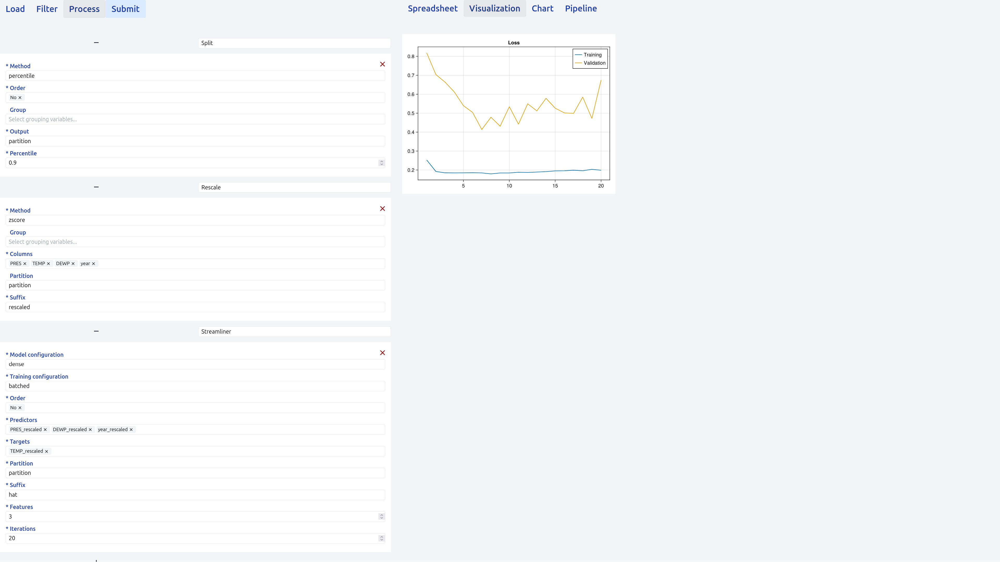

Deep Learning Guide
DashiBoard supports training and evaluating deep learning models via the StreamlinerCore package.
Streamliner cards can be inserted into any pipeline and receive / provide data to/from any other card.
Setup
As designing a deep learning model and devising a training procedure are complex tasks, DashiBoard request the user to pass in folders with example configuration files (see the static/model and static/training folders for examples).
When using a streamliner card, DashiBoard will read those folder and automatically generate the appropriate widgets.
Visualization
The streamliner card comes with a default visualization (see Pipelines.visualize), displaying the trajectory of the loss function in the training and validation datasets.
Example pipeline
Below we see a typical deep learning pipeline, comprised of the following steps:
- data partition,
- data normalization,
- model training and evaluation.
